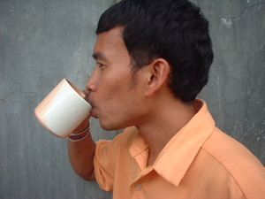
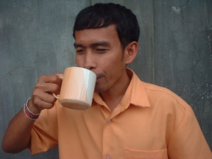

inum  
/ʔinum/
v_rt.
“drink”
1.
v.
for someone (eg-inum, mig-inum/in-inum, inum, agent, eg><ø-) to drink (any beverage) (eg-inumen, in-inum/mig-inum/pig-inum, inuma, patient, eg><en-)
Inuma nu seini.
Drink this.
Eng. drink
Tag. uminóm
Ceb. mag-inum
Ilo.: uminúm
Sarangani: ʔinem
Dibabawon: ʔinem
Cagayano: ʔinem
Obo: ʔinem
Cotabato Manobo: ʔinem
Tasaday: ʔinem
Tigwanon: ʔinum
Binukid: ʔinum
Kinamigin: ʔinum
WBM: ʔinum
Ilianen: ʔinum
Tagbawa: inem
Proto: ʔinem or ʔinum
OCM: Eating (264), Drinking Establishments (275)
Online dict status: -
Usage level: B
2.
v.
for drunkards (eg-inum, mig-inum/in-inum, inum, agent, eg><ø-) to drink (an alcoholic beverage)
Eg-inum e man-e ka me etew ne egpasuntukey e man-e kangkuwa.
The people are dringking again of hard liquor and then later they will fight again.
Eng. drink
Tag. maglasíng; tunggâ; barik; tagay; langgâ (sip wine)
Ceb. nag-inum
OCM: Alcoholic Beverage's (273)
DDP: Alcoholic beverage (5.2.3.7)
Online dict status: -
Usage level: B
v.
for a group (egmangiinum, migmangiinum/mmangiinum, agent, eg-maN-) to drink together (e.g, hard liquor)
Eng. drink, to (alcoholic)
Online dict status: -
Usage level: F
3.
v.
(egpekeinum, nekeinum, egpAkA-) to be thirsty
Egpekeinum a su miglarey a te aldew ka migdaru.
Eng. thirsty
Tag. uháw
Ceb. uhaw
Ilo.: mawáw
OCM: Water and Thirst (271)
DDP: Hungry, thirsty (5.2.2.5)
Online dict status: -
Usage level: B
4.
n.
(inumen, -en) beverage
Kenè kew inum te egpekewubug ne inumen su egkareetan ka bahe niyu.
Eng. beverage; drink
Tag. inumin
OCM: Nonalcoholic Beverages (272)
Online dict status: -
Usage level: B
n.
(inumen, -en) a drink
Wrd.Gloss: drink
Eng. drink
Online dict status: -
Usage level: B
Updated by: RJH,AAA,QDL,AAA,RAA,NJK,QDL
Last updated: 11/Feb/2010
"Inuma" in text "Ke due masakit"
"eg-inum" in text "Ke due masakit"
"keinum" in healthbook "Nekey-a ka kahew?"
"inumen" in healthbook "Nekey-a ka kahew?"
"eg-inumen" in healthbook "Nekey-a ka kahew?"
"nekeinum" in healthbook "Mania teg pakapatey kag iindes?"
"peinumen" in healthbook "Mania teg pakapatey kag iindes?"
This page last updated: 19/May/2012
Copyright © 2009-2010, Matigsalug Language Christian Association, Inc